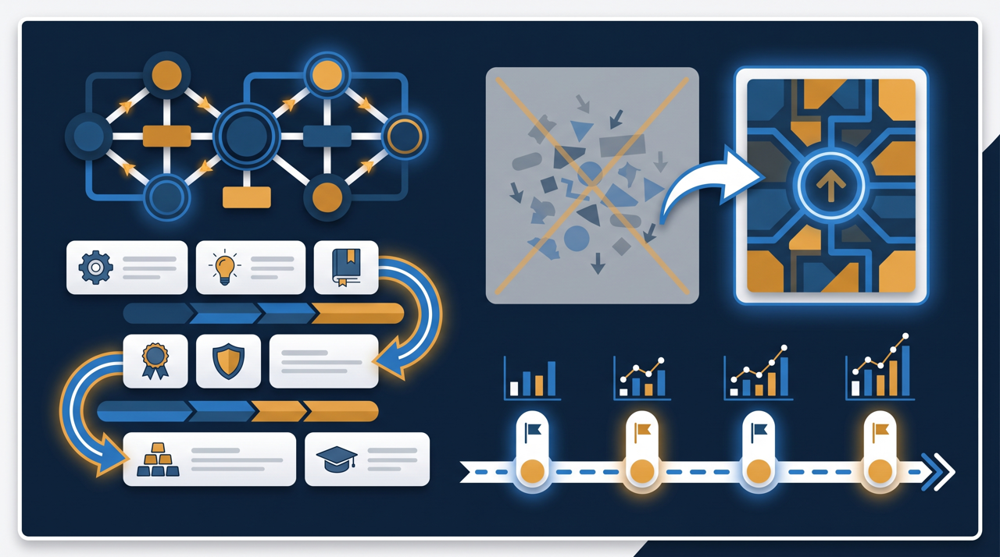
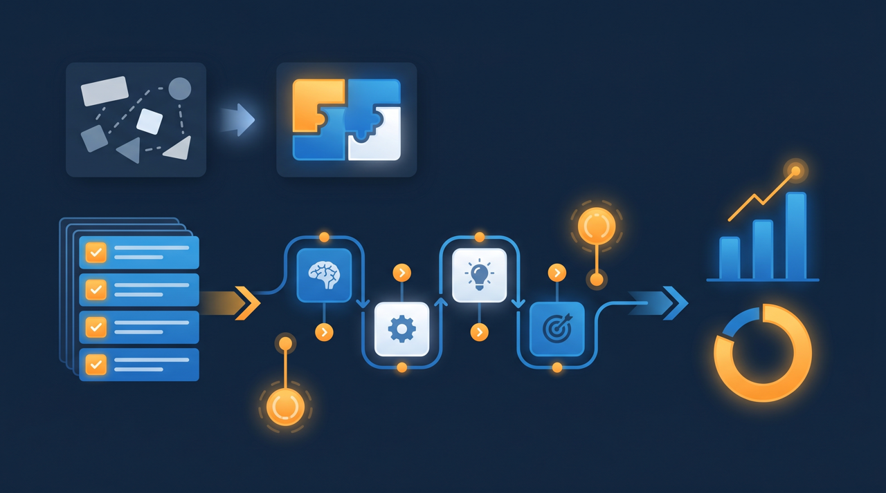
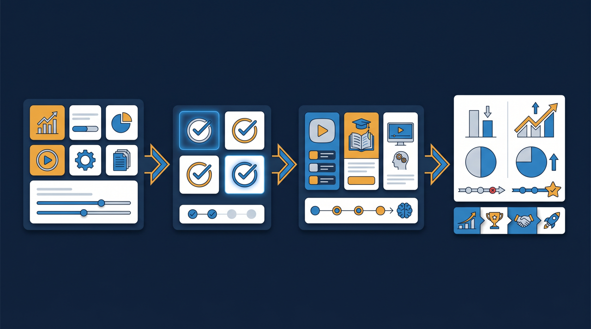

「毎月の研修準備に、担当者がまる二日とられている」——こんな状態を、動画研修でどう変えられるのか。この記事では、繰り返しの集合研修に追われていた企業が、研修の動画化によって運用の工数をどう減らしていったのかを、想定事例として整理します。実在の特定企業の数値ではなく、よくある中小企業の課題をモデルにした一般的な事例として読んでみてください。

導入前の課題：繰り返しの研修に運用が追われていた
まず、想定する企業の状況を整理します。仮に、サービス業で従業員50名規模の会社を思い浮かべてください。この会社では、新しく入った人や異動してきた人に向けて、基本的な業務の進め方やマナー、社内ルールを伝える研修を、月に1〜2回のペースで開いていました。内容は毎回ほぼ同じです。
ところが、この「毎回ほぼ同じ」が、運用する側にとっては重い負担になっていたんです。研修を開くたびに、参加者の都合を聞いて日程を決め、会議室を押さえ、講師役の社員のスケジュールを確保し、資料を人数分印刷し、当日の進行を担当する。終わったあとには出欠を集計し、誰が受けたかを記録する。この一連の作業に、担当者がのべ二日ほどかかっていた、という想定です。
しかも、講師役を務める社員にとっても、研修のたびに半日を取られるのは大きな負担でした。その社員は本来、現場の中心として動いている人です。研修のために現場を離れると、その間の業務が滞る。さらに、講師役が複数いると、人によって説明の仕方や強調する点が違い、新人の理解度に差が出る、という声も上がっていました。月ごとに同じことを繰り返しているのに、毎回ゼロから準備し、毎回同じところで新人がつまずく。この繰り返しを、なんとかできないかというのが出発点でした。
担当者に話を聞くと、こんな声が出てきます。「内容を作るのは一度で済んでいるはずなのに、なぜか毎月くたびれる」。これは多くの会社で共通する感覚なんですよね。研修の中身そのものは安定しているのに、開くたびに発生する段取りの作業が、じわじわと時間を奪っていく。日程を一つ決めるにも、参加者と講師役の予定を突き合わせ、会議室の空きを確認し、それでも誰かの都合が合わずに調整し直す。こうした目に見えにくい作業が積み重なって、「のべ二日」という数字になっていたわけです。そして厄介なのは、この負担が研修の質を上げているわけではない、という点です。段取りにかける時間が増えても、新人がより深く学べるようになるわけではありません。労力の多くが、教育そのものではなく、教育を回すための運用に消えていたのです。
なぜ「繰り返しの研修」は工数がかさむのか
この会社の課題は、特別なものではありません。繰り返し開催する研修は、その性質上、運用の工数がかさみやすい傾向があります。理由を整理してみましょう。
1. 開催のたびに同じ準備が発生する
繰り返し研修の一番の負担は、内容が同じなのに準備が毎回ゼロからになることです。日程調整も会場手配も案内も、開催回数の分だけ発生します。内容を作る手間は最初の一回で済んでいるはずなのに、運用の手間だけが回数に比例して積み上がっていくわけです。
2. 講師役の時間が固定で奪われる
集合研修は、講師がその場にいないと成り立ちません。つまり、開催のたびに講師役の社員の時間が取られることになります。その社員が優秀で現場の要であるほど、研修に時間を取られることの機会損失は大きくなります。教えるために本業が止まる、という構造が、繰り返すほど効いてくるんです。
3. 記録と集計が手作業で残る
出欠の確認や受講記録は、紙やExcelで手集計している会社が今も少なくありません。研修のたびに名簿を確認し、転記し、ファイルを更新する。一回あたりは小さな作業でも、回数を重ねると無視できない事務量になります。厚生労働省の能力開発基本調査でも、研修の実施そのものは多くの企業で行われている一方、その運用をどう効率化するかは課題として残りやすいことがうかがえます。
さらに、手集計の記録には、後から困る場面が潜んでいます。たとえば、ある新人がトラブルを起こしたとき、「その人は安全教育を受けていたのか」を確認しようとしても、紙の出欠表をさかのぼって探さなければならない。記録が見つからなければ、受けたかどうかも分からないままです。研修をやっているのに、やった証拠があいまい、という状態は、会社にとってじわじわと効いてくるリスクです。繰り返しの研修ほど回数が多いので、記録の管理もその分だけ煩雑になり、抜けや探しにくさが生まれやすくなるわけです。

取り組み：研修を動画化し、受講管理に載せた
この会社が取り組んだのは、繰り返しの座学部分を動画にして、受講管理の仕組みに載せる、というものでした。手順を順に見ていきます。
開催回数の多い研修から動画化した
最初に動画化したのは、最も開催回数が多かった基本業務の研修でした。理由はシンプルで、回数が多いほど、一度作った動画を使い回せる回数も多く、投じた手間が早く回収できるからです。新人向けの基礎研修のように、毎月のように繰り返している内容は、動画化の効果が出やすい対象だったわけです。
講師の説明を10分前後の単位に分けて収録した
これまで半日かけて講師が話していた内容を、テーマごとに区切り、10分前後の動画として収録しました。長い動画を1本そのまま流すより、短く区切ったほうが、新人がすきま時間に見やすく、見返したい部分にもたどり着きやすい。最初から凝った映像を目指さず、「会場に来なくても、これを見れば同じことが分かるか」を基準に作っていきました。
確認テストと修了の条件をつけた
動画を見せて終わり、にしないために、各テーマの後に確認テストを用意しました。何問以上の正解で修了とするかを決め、見ただけでなく理解したところまでを記録に残せるようにしました。これにより、講師役が口頭で「分かった?」と確認していた部分を、仕組みが肩代わりするようになったわけです。
受講管理をLMSに集約した
教材と受講記録は、学習管理システム（LMS）に集約しました。新しく入った人を招待すれば、各自のペースで動画を見て、テストを受けられる。誰がどこまで進んだか、合格したかは自動で記録され、担当者は一覧を見るだけで状況を把握できます。未受講の人へのリマインドも仕組みの中で進められるようになりました。
この集約には、もう一つの狙いがありました。それまで、研修資料は担当者の個人PCに保存され、出欠表は別の場所、過去の受講記録はまた別のファイル、というように、情報がばらばらに散らばっていたんです。担当者が変わるたびに「あの資料はどこにあるのか」を探すところから始まる、という状態でした。教材と記録を一つの場所にまとめておけば、誰が担当しても同じように運用でき、引き継ぎのたびに混乱することもなくなります。研修を個人の手元の作業から、組織として回せる仕組みへ移す、という意味合いもあったわけです。

変化：運用工数と講師負担がどう変わったか
この取り組みの結果、どのような変化が見られることがあるのかを整理します。なお、ここで挙げる変化は、こうした取り組みで起こりやすい傾向を一般化したもので、すべての企業で同じ結果が出ると断定するものではありません。
まず、開催のたびに発生していた準備作業が、大きく減る傾向があります。日程調整も会場手配も案内も、繰り返し研修のたびに発生していたものが、教材を一度準備すれば済むようになる。新しく人が入ったら招待するだけで受講が始まるため、研修のたびに担当者がのべ二日とられていた、という状態から解放されやすくなるわけです。
次に、講師役の負担が軽くなる傾向があります。座学の繰り返し部分を動画が肩代わりするため、講師役の社員が研修のたびに半日を取られることがなくなります。空いた時間を本業や、新人それぞれの癖に合わせた個別の指導に回せるようになる。教える総量が減るだけでなく、教える中身の質が上がる、という変化が起こることもあります。
そして、記録の手間と新人の理解のばらつきが減る傾向があります。出欠や修了の記録が自動で残るため、手集計の事務がなくなる。同じ動画を全員が見るので、講師役による説明の差もなくなり、新人の到達レベルが揃いやすくなります。ところで、こうした記録が仕組みの中に残ることは、人材開発支援助成金のように研修の実施を証明する書類が求められる制度を活用する際にも、整理がしやすいという副次的な利点につながることがあります。
一方で、動画を作る最初の手間はかかります。ここは正直にお伝えしておくべき点です。1本目の教材を作るには、台本を整え、収録し、テストを用意する時間が必要です。ただ、同じ研修を年に何度も繰り返している場合は、一度作れば翌年以降も使えるため、長い目で見ると準備の総量は減ることが多いわけです。だからこそ、開催回数の多い研修から着手するのが、手間を回収しやすい進め方なんですよね。
工数が減った先に生まれた、もう一つの変化
工数の削減は分かりやすい効果ですが、この取り組みには、数字にしにくいけれど大切な変化も伴うことがあります。それは、教える側の気持ちの変化です。
これまで講師役の社員は、研修のたびに「また同じ説明をするのか」という思いを抱えがちでした。毎回ゼロから準備し、毎回同じ内容を話す。これは、教えることが得意な人ほど、単調さにくたびれてしまう作業でもあります。座学の繰り返し部分を動画が肩代わりするようになると、講師役は同じ説明から解放され、新人それぞれの理解度に合わせた個別のフォローに時間を使えるようになる。教える行為が、流れ作業から、一人ひとりに向き合う仕事へと変わっていくわけです。これは、教える側の満足にもつながりやすい変化です。
新人の側にも変化が生まれることがあります。動画なら、分からなかった部分を何度でも巻き戻して見返せます。集合研修では「もう一度説明してください」と言い出しにくかった人も、自分のペースで繰り返し確認できる。聞き返す遠慮がなくなることで、理解が深まりやすくなる、という面があるんですよね。教える側の負担を減らす取り組みが、教わる側の学びやすさにもつながっていく。工数削減という入り口から始めた取り組みが、教育の質そのものを底上げしていくことがある、というのがこの事例の見どころと言えます。
もちろん、こうした変化がすべての会社で同じように起きるわけではありません。ただ、繰り返しの研修を仕組みに任せることで生まれる余白が、教える側にも教わる側にも、より良い時間の使い方をもたらしうる、という点は、覚えておく価値があると思います。
この事例から学べること
最後に、この想定事例から、自社で取り組む際のヒントを整理しておきます。
一つめは、全部を一度に変えようとしないこと。この会社も、すべての研修をいきなり動画化したわけではありません。最も開催回数の多い研修を1つ選び、そこで効果を確かめてから、ほかの研修へ広げていきました。小さく始めて広げる順番が、現場の負担を抑えながら定着させるコツになります。
二つめは、繰り返し部分と、その場が必要な部分を分けること。動画にすべきは、毎回同じ説明をする座学の部分です。逆に、質疑応答や実技の確認、その場のやり取りが必要な部分は、集合形式で残す判断もあります。すべてを動画に置き換えようとするのではなく、置き換えられる部分から外に出していく発想が現実的です。
三つめは、作った教材を組織の資産として管理すること。せっかく動画化しても、担当者の個人PCやばらばらのフォルダに散らばれば、また探せなくなって運用が混乱します。教材と受講記録を一つの仕組みに集約し、誰が担当しても同じように運用できる状態を保つことが、長く効かせるための条件になります。繰り返しの研修に追われている会社ほど、まずは開催回数の多い1つから動画化してみる価値があるのではないでしょうか。
よくある質問
完全になくすというより、役割を分けるケースが多い傾向があります。毎回同じ説明をする座学部分を動画に任せ、質疑応答や実技の確認など、その場のやり取りが必要な部分だけ集合形式で残す、という組み合わせが現実的です。動画は集合研修を置き換えるより、繰り返し部分を肩代わりさせる位置づけと考えると整理しやすくなります。
繰り返し開催のたびに発生していた作業が中心です。日程調整、会場の手配、講師のスケジュール確保、参加者への案内、当日の運営、出欠の集計といった事務が、動画化と受講管理の仕組みによって一度の準備で済むようになる傾向があります。教材を作る最初の手間はかかりますが、回数を重ねるほど差が出てきます。
最初の1本を作る手間は確かにかかります。ただ、同じ研修を年に何度も繰り返している場合は、一度作れば翌年以降も使えるため、長い目で見ると準備の総量は減ることが多いです。まずは開催回数の多い研修から動画化すると、投じた手間が回収しやすい傾向があります。
学習管理システム（LMS）を使うと、誰がどの動画をどこまで見たか、確認テストに合格したかが自動で記録されます。紙の出欠表を集めて手で集計する作業がなくなり、未受講者へのリマインドも仕組みの中で進められるため、確認にかかる手間そのものが軽くなる傾向があります。
1本を短く区切る、スマートフォンでも見られるようにする、確認テストや修了の条件を設けて学習のゴールを明確にする、といった工夫で受講が進みやすくなります。長時間の動画を1本そのまま流すより、10分前後の単位に分けるほうが、すきま時間に見てもらいやすい傾向があります。
研修の内容や進め方によっては、人材開発支援助成金のように、訓練にかかった経費や賃金の一部を助成する制度を活用できる場合があります。対象となる訓練の要件や助成の条件は変わることがあるため、最新の公募要領や厚生労働省の案内を確認したうえで検討することをおすすめします。
むしろ人手の限られた中小企業ほど、繰り返しの研修を仕組みに任せる効果が出やすい傾向があります。教える人が限られている環境では、その人が研修のたびに時間を取られると本業が進みません。動画化で繰り返し部分を肩代わりさせると、限られた人手を本来の業務や個別の指導に回しやすくなります。